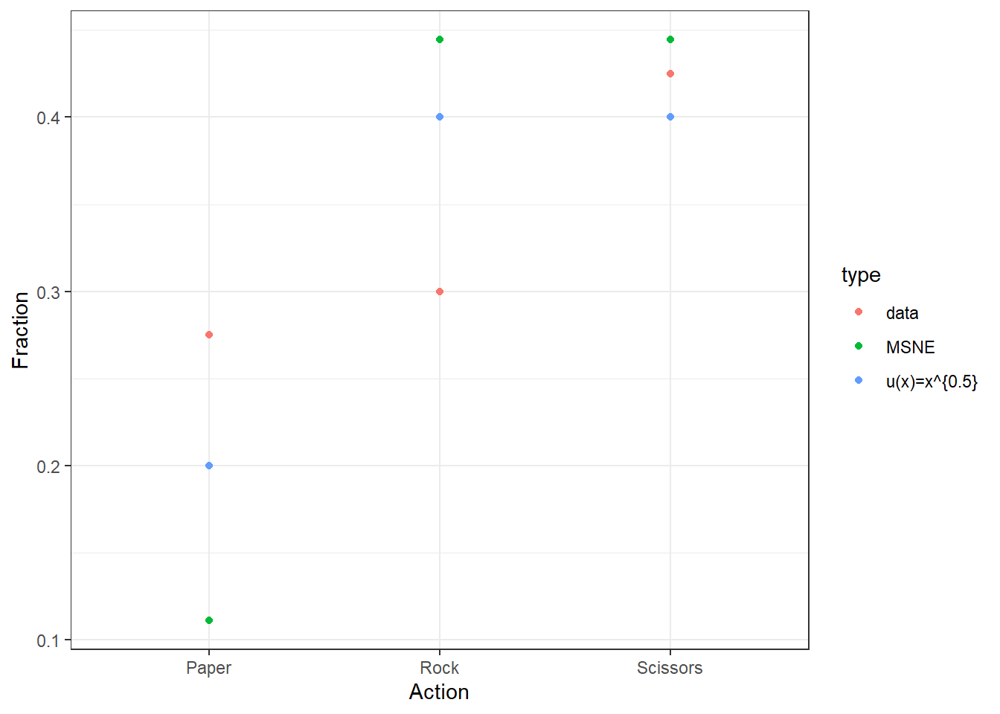

16 Asymmetric rock, paper, scissors
16.1 Instructions
Rounds and Matchings: The experiment consists of a number of rounds. Note: In each round, you will be matched with another person selected at random from the other participants. There will be a new random rematching each round. The number of rounds in this part of the experiment is: 10.
Interdependence: Your earnings are determined by the decisions that you and the other person make.
Decisions: On the next page, you will see a table of payoffs. There are 3 rows and 3 columns. Your decision will determine the row and the decision made by the other person will determine the column that is relevant for you. Then your payoff will be found in the intersection of the row you selected and the column corresponding to the other person’s decision.
Symmetric Payoffs: The other person will have a payoff table that is the same as yours, and they will also choose among the 3 rows. Your decision will determine the column that is relevant for their payoff, just as their decision determines the column that is relevent for you.
Your Decision: You will make your decision by a button at the left side of the table, corresponding to one of the 3 rows. These buttons are labeled: 1, 2, and 3.
Payoffs: The person you are matched with will be looking at the same table, and that person will also choose one of the rows in their table. Your payoff is determined by the intersection of the row that you choose and the column determined by the other person’s choice. Similarly, the other person’s payoff is determined by the row that they choose and the column determined by your choice.
Please continue to the next page.
History Records: Prior to making your decision, you will see a record of the most recent 10 decisions made by the person who you are currently matched with. Similarly, the person who you are matched with in this round can see the decisions that you made (while matched with others) in the previous 10 rounds.
Note: Even though you will be randomly matched with a different person in each round, this limited history of your past decisions can be seen by each new person you meet, and vice versa.
Matchings: At the beginning of each round, there will be a new random pairing of all participants, so the person who you are matched with in one round may not be the same person you will be matched with in the subsequent round. Matchings are random, and you are no more likely to be matched with one person than with another.
History Records: Prior to making your decision, you will see a record of the 10 most recent decisions made by the person you are currently matched with. Conversely, any decision that you make will be observed by people who you are matched with in the next 10 rounds.
Rounds: There will be 10 rounds in this part of the experiment, with random rematchings at the beginning of each.
Earnings: Your earnings are determined by the choices that you and the other person make in the round. You begin with a fixed payment of $0.00, and earnings will be added to this amount (losses, if the game has negative payoffs, will be subtracted). Your total earnings will be displayed in a cumulative earnings column on the page that follows.
16.2 The two games:
Game 1 – rounds 1-10
| rock | paper | scissors | |
|---|---|---|---|
| Rock | 0, 0 | 0, 1 | 1, 0 |
| Paper | 1, 0 | 0, 0 | 0, 4 |
| Scissors | 0, 1 | 4, 0 | 0, 0 |
| rock | paper | scissors | |
|---|---|---|---|
| Rock | 0, 0 | 0, 2 | 3, 0 |
| Paper | 2, 0 | 0, 0 | 0, 1 |
| Scissors | 0, 3 | 1, 0 | 0, 0 |
16.3 Questions
Show that each of the two games does not have an equilibrium in pure strategies.
Compute the mixed strategy Nash equilibrium for each game. Note that since the game is symmetric (i.e. the row player’s payoff if the outcome is \(\{R,p\}\) is the same as the column player’s payoff if the outcome is \(\{P,r\}\). Your answer, for each game, should be the probability that each player plays each of their actions.
Using the mixed strategy Nash equilibrium you calculated in question 2, make a comparative static prediction about which actions should be played more frequently than others, and which actions should be played with the same probability as others.
Plot the fraction of times each action was played for each game. On the same plot, show the mixed strategy Nash equilibrium predictions. How well do these predictions line up with the data? Are they consistent with your comparative static predictions in question 3? Explain.
Consider a generalized version of Game 1, where players receive a bonus for plaing scissors:
rock
paper
scissors
Rock
0, 0
0, 1
1, 0
Paper
1, 0
0, 0
0, a
Scissors
0, 1
a, 0
0, 0
- Fill in the blanks with either “increases” or “decreases”: According to mixed strategy Nash equilibrium, as \(a\) increases, the probability that “Scissors” is played ________, and the probability that “Rock” and “Paper” is played ______. Explain your answer (with math and a reasoning behind it).
- Do you think that people playing these games will immediately understand and follow these predictions? Why or why not? What do you think they will actually do?
Suppose that the payoffs represent dollar amounts (i.e. not utility), and that players have expected utility preferences with utility function \(u(x)=x^r\).
- (4260 students only): For Game 1 only, calculate the mixed strategy Nash equilibrium for \(u(x)=x^{0.5}\) (i.e. \(r=0.5\)). How well does this prediction compare to the prediction you made in question 2? Show these predictions on a plot like you did in question 4.
- (6260 students only): Estimate a single \(r\) for both games, and one \(r\) for each game. Show these predictions on a plot like you did in question 4.
- (Bonus question): Do a formal hypothesis test that \(r=1\)
According to the (risk-neutral) mixed-strategy Nash equilibrium predictions, how much on overage should people earn in each round (assuming that everyone is paid for every round)? How well does this prediction match the data?
16.4 Solutions
- Show that each of the two games does not have an equilibrium in pure strategies.
Game 1 – rounds 1-10
| rock | paper | scissors | |
|---|---|---|---|
| Rock | 0, 0 | 0, 1 | 1, 0 |
| Paper | 1, 0 | 0, 0 | 0, 4 |
| Scissors | 0, 1 | 4, 0 | 0, 0 |
| rock | paper | scissors | |
|---|---|---|---|
| Rock | 0, 0 | 0, 2 | 3, 0 |
| Paper | 2, 0 | 0, 0 | 0, 1 |
| Scissors | 0, 3 | 1, 0 | 0, 0 |
Since the game is symmetric, we need only test this for the row player. For both games:
| Row’s action | Column’s best response to this | Row’s best response to column’s best response |
|---|---|---|
| R | p | S |
| P | s | R |
| S | r | P |
Note that there is no action such that I would still play if my opponent best responded to it. Therefore thre is no equilibrium in pure strategies.
- Compute the mixed strategy Nash equilibrium for each game. Note that since the game is symmetric (i.e. the row player’s payoff if the outcome is \(\{R,p\}\) is the same as the column player’s payoff if the outcome is \(\{P,r\}\). Your answer, for each game, should be the probability that each player plays each of their actions.
For Game 1: \[ \begin{aligned} U_R&=p_s\\ U_P&=p_r\\ U_S&=4p_p\\ U_R&=U_P \ \implies p_s=p_r\implies p_p=1-2p_r\\ U_R&=U_S \ \implies 4p_p=p_r\\ 4(1-2p_r)&=p_r\\ 4&=9p_r\\ p_r&=\frac{4}{9},\quad p_p=\frac{1}{9}, \quad p_s=\frac{4}{9} \end{aligned} \] For Game 2: \[ \begin{aligned} U_R&=3p_s\\ U_P&=2p_r\\ U_S&=p_p\\ 3p_s&=2p_r=p_p\\ 1&=p_p+\frac{1}{3}p_p+\frac{1}{2}p_p=\left(\frac{6+2+3}{6}\right)p_p\\ p_p&=\frac{6}{11}\\ p_r&=\frac{3}{11},\ p_p=\frac{6}{11},\ p_s=\frac{2}{11} \end{aligned} \]
- Using the mixed strategy Nash equilibrium you calculated in question 2, make a comparative static prediction about which actions should be played more frequently than others, and which actions should be played with the same probability as others.
- In Game 1: \(p_r=p_s>p_p\)
- in Game 2: \(p_p>p_r>p_s\)
- Plot the fraction of times each action was played for each game. On the same plot, show the mixed strategy Nash equilibrium predictions. How well do these predictions line up with the data? Are they consistent with your comparative static predictions in question 3? Explain.
ActionLabels<-c("Rock","Paper","Scissors")
U1<-rbind(c(0,0,1),c(1,0,0),c(0,4,0))
U2<-rbind(c(0,0,3),c(2,0,0),c(0,1,0))
Nash1<-solve(U1)%*%c(1,1,1)/sum(solve(U1)%*%c(1,1,1))
Nash2<-solve(U2)%*%c(1,1,1)/sum(solve(U2)%*%c(1,1,1))
DNash<-tibble(Game=c(1,1,1,2,2,2),Fraction=c(Nash1,Nash2)
,a=c(1,2,3,1,2,3),
sd = sqrt(Fraction*(1-Fraction)/80),
Action = ActionLabels[a])
D<-(read.csv("2021-04-07AsymmetricRPS.csv")
%>% mutate(Game=ifelse(Round<=10,1,2),
Action = ActionLabels[Decision..1.Top.1.Left.])
%>% tibble()
)
head(D) ## # A tibble: 6 x 11
## Round ID Decision..1.Top.1.Lef~ Other.ID Other.Decision Recorded.Own.Decis~
## <int> <int> <int> <int> <int> <int>
## 1 1 1 1 8 2 1
## 2 1 2 3 7 1 3
## 3 1 3 3 6 3 3
## 4 1 4 1 5 2 1
## 5 1 5 2 4 1 2
## 6 1 6 3 3 3 3
## # ... with 5 more variables: Observed.History <chr>, Earnings <int>,
## # Cumulative.Earnings <int>, Game <dbl>, Action <chr>DSummary<-(
D
%>% group_by(Game,Action)
%>% summarize(count = n())
%>% group_by(Game)
%>% mutate(Fraction = count/sum(count),
se = sqrt(Fraction*(1-Fraction)/sum(count))
)
)
DSummary %>% kbl() %>% kable_styling(full_width=FALSE,htmltable_class="lightable-classic")| Game | Action | count | Fraction | se |
|---|---|---|---|---|
| 1 | Paper | 22 | 0.2750 | 0.0499218 |
| 1 | Rock | 24 | 0.3000 | 0.0512348 |
| 1 | Scissors | 34 | 0.4250 | 0.0552692 |
| 2 | Paper | 42 | 0.5250 | 0.0558318 |
| 2 | Rock | 25 | 0.3125 | 0.0518223 |
| 2 | Scissors | 13 | 0.1625 | 0.0412453 |
(
ggplot(data=DSummary %>% mutate(Game = paste("Game",Game)),aes(x=Action,y=Fraction))
+geom_point(aes(color="data"))
+geom_errorbar(aes(ymin=Fraction-se,ymax=Fraction+se,color="data"))
+geom_point(data=DNash%>% mutate(Game = paste("Game",Game)),aes(x=Action,y=Fraction,color="MSNE"))
+geom_errorbar(data=DNash%>% mutate(Game = paste("Game",Game)),aes(ymin=Fraction-sd,ymax=Fraction+sd,color="MSNE"),width=0.5)
+facet_wrap(~Game)
+theme_bw()
+ylim(c(0,1))
)
Here I show \(\pm\) one standard error for both Nash (cyan) and data (red). I am actually quite surprised how well the predictions line up for Game 2. In game 1, MSNE is getting that paper should be the least frequent strategy played, but is not doing well with predicting that rock and scissors should be played with equal probability.
- Consider a generalized version of Game 1, where players receive a bonus for playing scissors:
rock paper scissors Rock 0, 0 0, 1 1, 0 Paper 1, 0 0, 0 0, a Scissors 0, 1 a, 0 0, 0
The MSNE is: \[ \begin{aligned} U_R&=p_s,\quad U_P=p_r, \quad U_S = ap_p\\ p_r&=p_s\implies p_p=1-2p_r\\ p_r&=a(1-2p_r)\\ (2a+1)p_r&=a\\ p_r&=\frac{a}{2a+1}=p_s\\ p_p&=1-\frac{2a}{2a+1}=\frac{2a+1-2a}{2a+1}=\frac{1}{2a+1} \end{aligned} \]
Fill in the blanks with either “increases” or “decreases”: According to mixed strategy Nash equilibrium, as \(a\) increases, the probability that “Scissors” is played increases, and the probability that “Rock” and “Paper” is played increases, and decreases, respectively. Explain your answer (with math and a reasoning behind it).
That is because, as \(a\) increases, if \(p_r\) does not decrease, the payoff from playing scissors will be higher than playing rock or paper: it cannot be an equilibrium. Humans probably intuitively understand that as \(a\) increases they should play S more often (although not for the reason listed above). If they put themselves in the shoes of their opponent, they may realize that they should play P less often.
- Suppose that the payoffs represent dollar amounts (i.e. not utility), and that players have expected utility preferences with utility function \(u(x)=x^r\).
- (4260 students only): For Game 1 only, calculate the mixed strategy Nash equilibrium for \(u(x)=x^{0.5}\) (i.e. \(r=0.5\)). How well does this prediction compare to the prediction you made in question 2? Show these predictions on a plot like you did in question 4.
For this version, we place the 4 in the payoff table with 2. The only expected utility that changes is \(U_S=2p_p\), so now the system of equations is: \[ p_s=p_r=2p_p\\ p_p=1-2p_s\\ 2p_p=2-4p_s=p_s\\ 5p_s=2\\ p_s=p_r=\frac{2}{5}, \ p_p=\frac{1}{5} \] Adding these to the data from Game 1:
T1<-DSummary %>% filter(Game==1)
RiskAverseNash<-tibble(Fraction=c(2/5,1/5,2/5),Action=c("Rock","Paper","Scissors")) %>% mutate(count=80,sd=sqrt(Fraction*(1-Fraction)/80))
pltThis<-rbind(T1 %>% select(Fraction,Action) %>% mutate(type="data"),
RiskAverseNash %>% select(Fraction,Action) %>% mutate(type="u(x)=x^{0.5}"),
DNash %>% filter(Game==1) %>% select(Fraction,Action) %>% mutate(type="MSNE")
)
Plt<-(
ggplot(pltThis,aes(x=Action,y=Fraction,color=type))
+geom_point()
+theme_bw()
)
print(Plt)
Blue dots are closer to red dots in all clases, so \(u(x)=\sqrt{x}\) wins!
Now for the Masters question. Here I use maximum likelihood. For a single game, the log-likelihood function is: \[ \begin{aligned} \mathcal L(r)&=\sum_{a\in\{R,P,S\}}n_a\log(p_a^*(r)) \end{aligned} \] Where \(p^*_a(r)\) is the MSNE probability of choosing action \(a\).
rgrid<-seq(0.01,2,length=200)
likePlot<-tibble()
d1<- c(24,22,34)
d2<-c(25,42,13)
RNash<-tibble()
for (rr in rgrid) {
u<-U1^rr
p1<- u%*%c(1,1,1)/sum(u%*%c(1,1,1))
l1<-sum(d1*log(p1))
u<-U2^rr
p2<- u%*%c(1,1,1)/sum(u%*%c(1,1,1));
l2<-sum(d2*log(p2))
likePlot<-rbind(likePlot,tibble(r=rr,LogLike=c(l1,l2,l1+l2),Game=c("Game 1","Game 2","Both")))
RNash<-rbind(RNash,tibble(r=rr,p=c(p1,p2),action=c("Rock","Paper","Scissors","Rock","Paper","Scissors"),Game=c("Game 1","Game 1","Game 1","Game 2","Game 2","Game 2")))
}
(ggplot(RNash,aes(x=r,y=p,color = Game,linetype=action,group=paste(Game,action)))
+geom_line()
+theme_bw()
+labs(title="Nash equilibrium with CRRA preferences")
)
( ggplot(likePlot,aes(x=r,y=LogLike,color=Game))
+geom_line()
+theme_bw()
+labs(title="Log-likelihood function")
)
Estimates<-likePlot %>% group_by(Game) %>% filter(LogLike==max(LogLike))
Estimates%>% kbl() %>% kable_styling(full_width=FALSE,htmltable_class="lightable-classic")| r | LogLike | Game |
|---|---|---|
| 0.28 | -86.43321 | Game 1 |
| 0.36 | -172.31554 | Both |
| 0.56 | -85.45733 | Game 2 |
r1<-(Estimates %>% filter(Game == "Game 1"))$r
u1<-U1^r1
p1<-(solve(u1)%*%c(1,1,1))/sum((solve(u1)%*%c(1,1,1)))
r2<-(Estimates %>% filter(Game == "Game 2"))$r
u2<-U2^r2
p2<-(solve(u2)%*%c(1,1,1))/sum((solve(u2)%*%c(1,1,1)))
RMSNEpredictions<-tibble(p=c(p1,p2),Action=c("Rock","Paper","Scissors","Rock","Paper","Scissors"),Game = c("Game 1","Game 1","Game 1","Game 2","Game 2","Game 2"),type="Separate")
r<-(Estimates %>% filter(Game == "Both"))$r
u1<-U1^r
p1<-(solve(u1)%*%c(1,1,1))/sum((solve(u1)%*%c(1,1,1)))
u2<-U2^r
p2<-(solve(u2)%*%c(1,1,1))/sum((solve(u2)%*%c(1,1,1)))
RMSNEpredictions<-rbind(RMSNEpredictions,tibble(p=c(p1,p2),Action=c("Rock","Paper","Scissors","Rock","Paper","Scissors"),Game = c("Game 1","Game 1","Game 1","Game 2","Game 2","Game 2"),type="Together"))
(
ggplot(data=DSummary %>% mutate(Game = paste("Game",Game)),aes(x=Action,y=Fraction))
+geom_point(aes(color="data"))
+geom_errorbar(aes(ymin=Fraction-se,ymax=Fraction+se,color="data"))
+facet_wrap(~Game)
+geom_point(data=RMSNEpredictions,aes(x=Action,y=p,color=type))
+theme_bw()
+ylim(c(0,1))
)
c. (Bonus question): Do a formal hypothesis test that $r=1$- According to the (risk-neutral) mixed-strategy Nash equilibrium predictions, how much on overage should people earn in each round (assuming that everyone is paid for every round)? How well does this prediction match the data?
Note that the lowest positive payoff is $1, so in expectation I should pay out at most $ per round. Alternatively, \(p_S=4/9\) in game 1, and \(p_p=6/11\) in game 2.